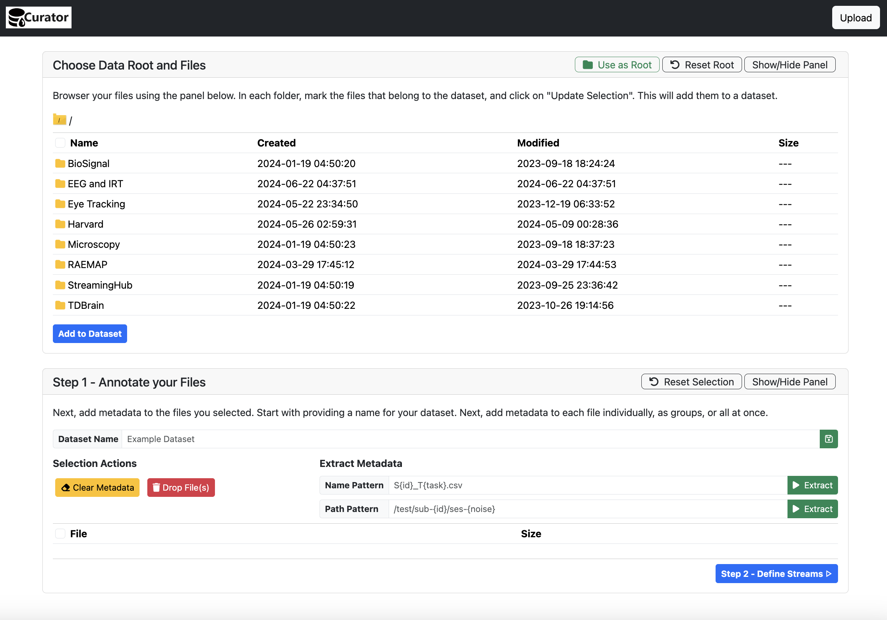
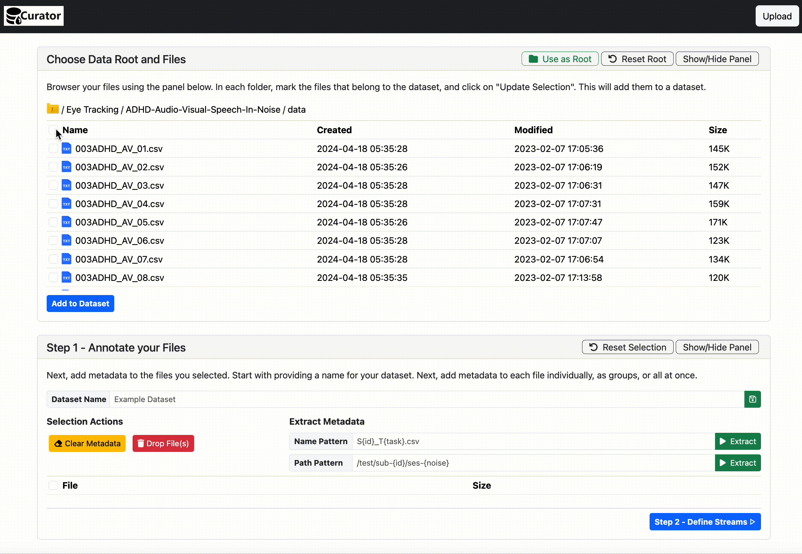
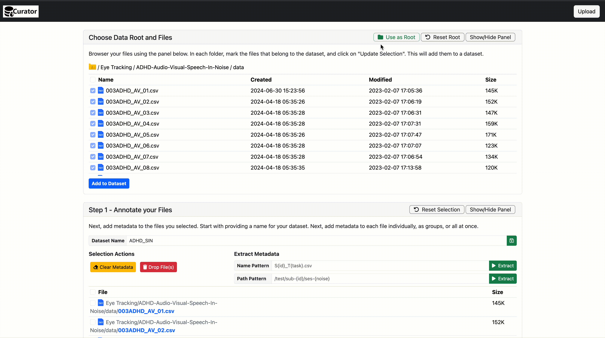
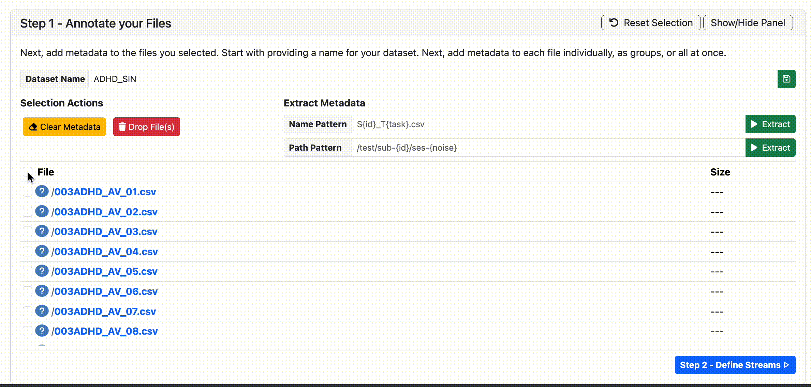
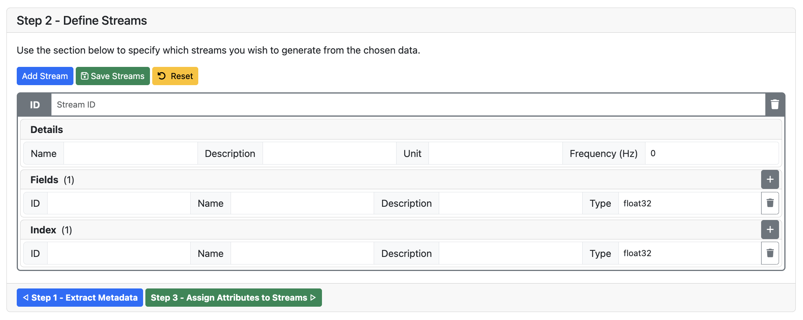
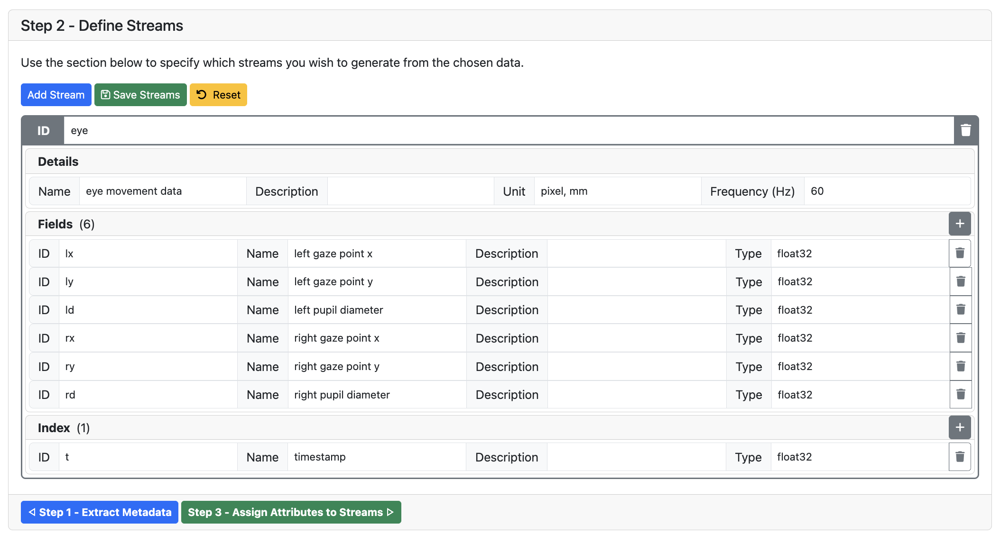
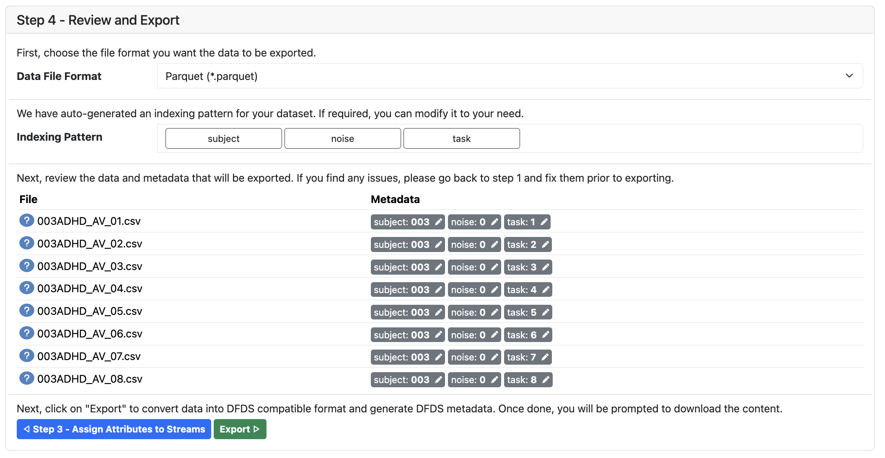
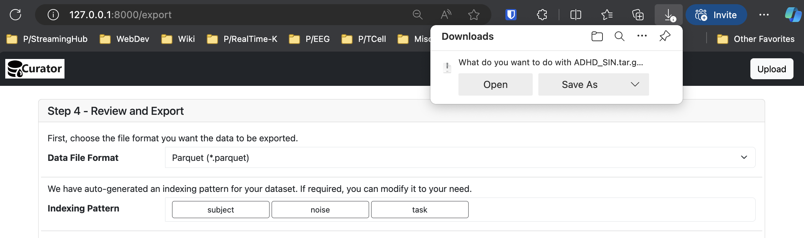
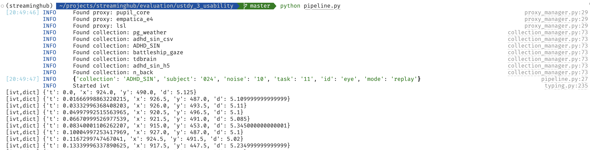

This document provides step-by-step instructions on creating a streamable dataset using Curator, and running a DataMux pipeline on its data.
You are given a Python script that (a) defines a real-time analysis pipeline, (b) assigns it one of two data sources, and (c) runs the pipeline. The two data sources are described below.
pupil_core deviceADHD_SIN collectionThe Python script looks as follows:
from fixation_detection import IVT
from reporting import LogWriter
import streaminghub_datamux as dm
if __name__ == "__main__":
# constants
dataset = "ADHD_SIN"
timeout = 30
screen_wh = (1920, 1080)
diag_dist = (21, 22)
freq = 60
# hyperparameters
vt = 10
# setup datamux api
api = dm.API()
streams = api.list_collection_streams(dataset) # for recorded data (ADHD_SIN)
# streams = api.list_live_streams("pupil_core") # for live data (pupil_core)
# get the first stream
stream = streams[0]
dm.logging.info(stream.attrs)
# define a transform to map data into (t,x,y,d) format
preprocessor = dm.ExpressionMap({
"t": "float(t)",
"x": "float(lx + rx) / 2",
"y": "float(ly + ry) / 2",
"d": "float(ld + rd) / 2",
})
# define pipeline
pipeline_A = dm.Pipeline(
api.attach(stream, transform=preprocessor),
# IVT(screen_wh=screen_wh, diag_dist=diag_dist, freq=freq, vt=vt, transform=None),
LogWriter(name="ivt", **stream.attrs),
)
# run pipeline
pipeline_A.run(timeout)
This script is configured to read a dataset ADHD_SIN. However, this dataset hasn’t been generated yet. In this tutorial, we will first try to generate this dataset using our dataset packaging tool, Curator, and then run the above script on the generated dataset.
First, open the running instance of Curator (https://full-darling-gar.ngrok-free.app) from your web browser.

Curator lets you create streamable datasets. Through its UI, you can browse the filesystem, where curator is running on, pick files, define a target format, and generate a streamable dataset. This is particularly useful in lab settings, where raw data is stored in a shared folder, and you want to get transformed data to run some analysis scripts on.
Let’s first open the Eye Tracking/ADHD-Audio-Visual-Speech-In-Noise/data folder from Curator UI. Next, let’s select all files using the checkbox, and click Add to Dataset button to add them to a new dataset.

Now, lets pick the current folder as the dataset’s root by clicking the Use as Root button at the top. This will get rid of long file paths.

Nice! Let’s specify a name for the dataset. In the Dataset Name box, type in ADHD_SIN and click on the save icon on the right.
Notice that each file is named according to the pattern <subject>ADHD_AV_<noise><task>.csv. Their value constraints are given below.
003, 004)0, 5, 10, 15, 20, or 25) dB.1 and 20 (inclusive)This information can be easily captured by the regular expression given below.
(?P<subject>\d+)ADHD_AV_(?P<noise>0|5|10|15|20|25)(?P<task>\d+)\.csv
Now, let’s use this pattern to extract metadata from file names. Begin by selecting all files from the table in Step 1 block. Now copy-paste the above regular expression into the Name Pattern box under Extract Metadata, and click on Extract. Upon doing so, you will see that Curator has extracted metadata from each file name.

Now let’s open some files and view their content. For this, you can simply click on the file names on either of the tables. This will download the selected file(s) to your computer, where you can view their content. Depending on your web browser, you may either get a download prompt, or the file may download/open immediately.

That’s one messy file! Let’s find which columns represent the gaze positions and pupil diameters of each eye. Take a look at these columns from the file.
The GazePointLeftX (ADCSpx), GazePointLeftY (ADCSpx), GazePointRightX (ADCSpx), and GazePointRightY (ADCSpx) columns indicate which eye (left or right) and axis (x or y) it represents, and that its values are in pixels (px). However, the PupilLeft and PupilRight column names lack the unit information. If you observe the PupilLeft and PupilRight column values, you will find their values to be in range of 3.0 — 5.0 , which matches human pupil diameter range in mm (2.0 to 8.0). Hence we can safely assume their values are in mm. The RecordingTimestamp column gives time information. All data appears to be in 60 Hz (i.e., each file has 60 rows per second).
With this information, let’s move onto the next step by clicking Step 2 - Define Streams.
Now, you’re in the page where you can specify what structure you want the data to be in. Lets first define a stream with the following attributes.

Next, let’s assign a set of field values to the gaze stream. Use the + button to add new fields, and the trash button to remove added fields.
lx: Name - left gaze point xly: Name - left gaze point yld: Name - left pupil diameterrx: Name - right gaze point xry: Name - right gaze point yrd: Name - right pupil diameterNext, let’s assign an index value to the eye stream.
t - Name - timestampLeave all description fields blank. Use float32 for all type fields. The final UI will look like follows.

Once done, click the Save Streams button to save what you just defined.
Note that here, we put both x, y positions (which have `pixel` units) and pupil diameters (which have `mm` units) into the same stream, and set its unit as `pixel, mm`. Alternatively, you could define two separate streams, `gaze` and `pupil`, with `gaze` having `pixel` as unit, and `pupil` having `mm` as unit. Depending on your need, you can pick one format over the other. For the scope of this tutorial, let’s stick to having one `eye` stream.
Now, proceed to the next step by clicking on Step 3 - Assign Attributes to Streams.
Now, you’re in the page where you can pick which columns to assign to the lx, ly, ld, rx, ry, rd, and t fields you defined on the last step.

When you click on any (Not Selected) box on the right, you are shown a dropdown with the list of columns present in each file.

Let’s assign the right columns to each field.
lx - GazePointLeftX (ADCSpx)ly - GazePointLeftY (ADCSpx)ld - PupilLeftrx - GazePointRightX (ADCSpx)ry - GazePointRightY (ADCSpx)rd - PupilRightt - RecordingTimestampOnce assigned, the UI should look as follows.

Now, click on the Save Mapping button and click on Step 4 - Review and Export to proceed to the next step.
Now, you’re in the page where you can download the dataset with a file format and indexing pattern of your choice.

Let’s pick Parquet as our file format, and keep the suggested indexing pattern as-is. Now, click on Export to download the dataset. Once clicked, allow Curator a minute to generate the dataset and prompt you to download it.
Save this file a folder of your choice. Do not delete the downloaded tar.gz file yet, as we will later use that file to stream data.

Congratulations! You just created a streamable dataset using Curator.
Step 1: Install Python 3.10, if you haven’t already.
Step 2: Download the starter project from the link below and open it from your Python IDE.
https://drive.google.com/file/d/1s8t5fbDCUxDI9wBvJeD3uMiXv9RPs2Dn/view?usp=sharing
Step 3: Create a virtual environment, activate it, and install project dependencies.
python -m venv ./venv
source ./venv/bin/activate
python -m pip install -r requirements.txt
This will install three packages: streaminghub-datamux , streaminghub-pydfds, streaminghub-proxy-pupil-core, and their required dependencies.
Step 4: Create a new directory named $HOME/streaminghub and configure the streaminghub-datamux package to use that directory.
mkdir -p $HOME/streaminghub
python -m streaminghub_datamux init --data_dir="$HOME/streaminghub" --meta_dir="$HOME/streaminghub"
Step 5: Now, lets extract the tar.gz file you downloaded earlier into the $HOME/streaminghub directory. For this, let’s open a terminal in the folder where you downloaded the tar.gz file, and run the following command.
$ tar -zxvf ADHD_SIN.tar.gz -C $HOME/streaminghub
Once extracted, your $HOME/streaminghub directory should look as follows.
$ ls -l $HOME/streaminghub
total 8
drwxr-xr-x@ 850 ...... ..... 27200 Jun 24 13:30 ADHD_SIN
-rw-r--r-- 1 ...... ..... 1930 Jun 24 13:30 ADHD_SIN.collection.json
Now, let’s try to stream data from the dataset we just generated. For this, let’s run the previously opened python script (pipeline.py) from the terminal.
Python Script
from fixation_detection import IVT
from reporting import LogWriter
import streaminghub_datamux as dm
if __name__ == "__main__":
# constants
dataset = "ADHD_SIN"
timeout = 30
screen_wh = (1920, 1080)
diag_dist = (21, 22)
freq = 60
# hyperparameters
vt = 10
# setup datamux api
api = dm.API()
streams = api.list_collection_streams(dataset) # for recorded data (ADHD_SIN)
# stream = api.list_live_streams("pupil_core") # for live data (pupil_core)
# get the first stream
stream = streams[0]
dm.logging.info(stream.attrs)
# define a transform to map data into (t,x,y,d) format and handle missing values
preprocessor = dm.ExpressionMap({
"t": "float(t)",
"x": "float(lx + rx) / 2",
"y": "float(ly + ry) / 2",
"d": "float(ld + rd) / 2",
})
# define pipeline
pipeline_A = dm.Pipeline(
api.attach(stream, transform=preprocessor),
# IVT(screen_wh=screen_wh, diag_dist=diag_dist, freq=freq, vt=vt, transform=None),
LogWriter(name="ivt", **stream.attrs),
)
# run pipeline
pipeline_A.run(timeout)
Terminal Command
$ python pipeline.py
Now, you should see a recording from the ADHD_SIN dataset being logged on the terminal in a realtime-ish manner, without having to write any dataset-specific data reading code.

Moreover, the line dm.logging.info(stream.attrs) in our Python script logs any metadata in the selected recording (i.e., stream).
{
"collection": "ADHD_SIN",
"subject": "024",
"noise": "10",
"task": "11",
"id": "eye",
"mode": "replay"
}
What is the transform=preprocessor doing here?
preprocessor = dm.ExpressionMap({
"t": "float(t)",
"x": "float(lx + rx) / 2",
"y": "float(ly + ry) / 2",
"d": "float(ld + rd) / 2",
})
By default, stream outputs will be passed on as-is. However, if you set the transform to an ExpressionMap, this tells DataMux to transform data before passing on, and specifies how to. The ExpressionMap constructor takes a dictionary as argument, whose keys tell DataMux what fields should be generated, and whose values provide DataMux an expression to generate them. Each expression is evaluated with all input variables in global scope, and hence, it will output the correct value.
Now, let’s uncomment the 2nd step of the pipeline. This turns our script from, a two-step pipeline (source → logger), into a three-step pipeline (source → algorithm → logger).
Before
# define pipeline
pipeline_A = dm.Pipeline(
api.attach(stream, transform=preprocessor),
# IVT(screen_wh=screen_wh, diag_dist=diag_dist, freq=freq, vt=vt, transform=None),
LogWriter(name="ivt", **stream.attrs),
)
After
# define pipeline
pipeline_A = dm.Pipeline(
api.attach(stream, transform=preprocessor),
IVT(screen_wh=screen_wh, diag_dist=diag_dist, freq=freq, vt=vt, transform=None),
LogWriter(name="ivt", **stream.attrs),
)
Now, let’s run the pipeline again.

This time, the program logs a different set of values. Compared to the two-step pipeline, the three-step pipeline generates much less values. This is because fixations and saccades are lossy representations of eye movement data. However lossy fixation/saccade events may be, they closely resemble a person’s viewing pattern (i.e., process, refocus, process, refocus, … ).
To perform this task, you must connect a pupil core device to your machine.
To use a live data stream, the code requires only one change of variable (stream). Doing so switches the pipeline from using recorded data to using live pupil core data.
stream = api.list_live_streams("pupil_core") # for live data (pupil_core)
# stream = api.list_collection_streams(dataset) # for recorded data (ADHD_SIN)
When switching data sources, beware that the names of measurements may be different from your previous data source. You may need to update the dm.ExpressionMap dictionary values (not keys) to reflect the change in variable names.
The updated ExpressionMap for the live data source is provided below.
preprocessor = dm.ExpressionMap({
"t": "float(t)",
"x": "float(eye_l.x + eye_r.x) / 2",
"y": "float(eye_l.y + eye_r.y) / 2",
"d": "float(pupil_l.d + pupil_r.d) / 2",
})
Now, let’s run the pipeline again. The pipeline can now be run on actual live data, simply by making small, straightforward changes to the Python script.
That brings us to the end of this tutorial. Hope you enjoyed using our framework!
Please complete the user experience questionnaire provided on the link below. https://forms.gle/vBx74dV3tTpSo6c8A